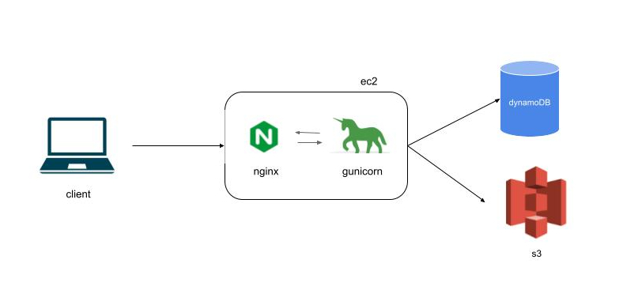

The diagram below shows the design of the travels project.
The system is fully hosted on aws.
The ec2 instance handles requests from the client via the nginx and gunicorn servers while data and objects are stored in dynamoDB and s3.
In this case, nginx is used both as a web server to render static files as well as a proxy to forward api requests to the backend.

As an example, when the client first lands on the main page the request goes through the following steps:
Photo DynamoDB item [to be continued ...]
I built the travels project out of a desire to learn more about non-relational databases and collect memories and pictures from my recent trips in a fun and personable way. It turned into a full stack project where I learned a good deal about dynamoDB, ec2, nginx and gunicorn. I also brielfy touched upon the concepts of proxy server and cors.
To consider in future releases:
I hope you enjoyed the travels project as much as I did when building and piecing together each component. I always welcome constructive feedback and if there is anything that stood out or, if you would simply like to say hi, send me a line at luisa.pegoraro@gmail.com. Until next time.
živeli! · enjoy!